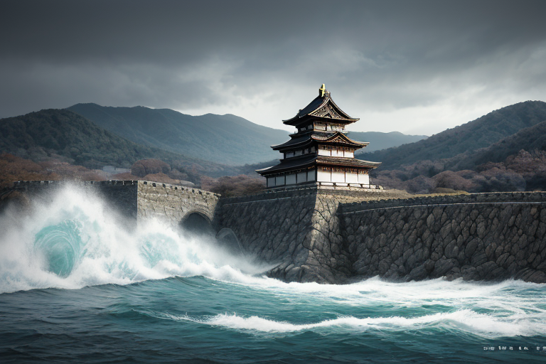
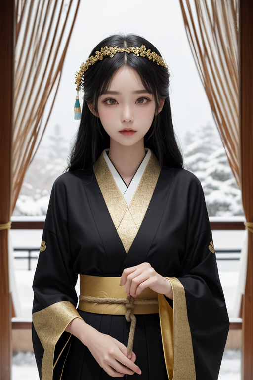
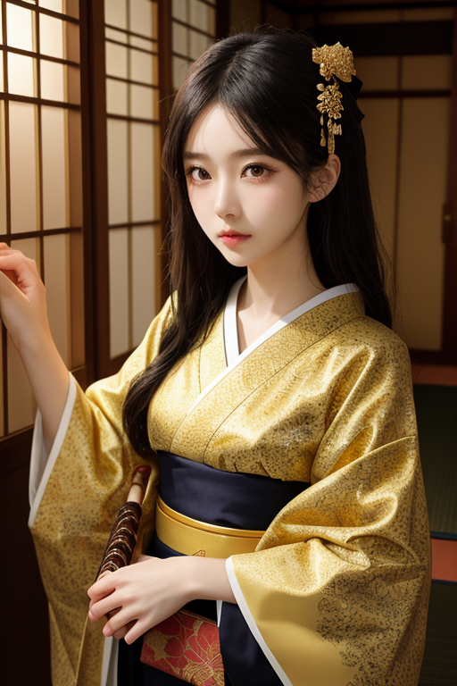
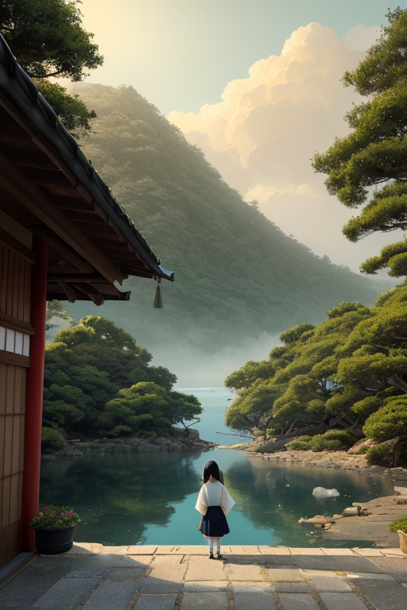

第一章 現実の石川
あなたはまだ気づいていない。この土地にも、王がいることを。
日本海の荒波が能登の岩礁を削り、雪雲が白山連峰に沈む。ここは境界線、北陸境。内と外、山と海、伝統と革新がせめぎ合う土地だ。金沢城の石垣は静かに雨に濡れ、ひがし茶屋街の格子戸の奥から三味線の音が漏れる。全てが、かすかな「歪み」の上に成り立っている日常である。
王、イシカリア・アルテは、その歪みを調整する者だ。彼の目には、土地の下を流れるエネルギーの亀裂、人々の営みが織りなす感情の密度、そしてそれらが美の形を保とうとする緊張が映る。今日も、日本海溝から伝わる地殻の軋みを、ほんの少しだけ和らげる。大災害を消すことはできない。せいぜい、揺れを一歩手前で弱め、津波の到達を数秒遅らせるのが関の山だ。
彼は金沢城の櫓に佇み、冷たい風に金髪をなびかせる。傍らには主席妖精アルティナが、光の粒子をまとって浮かぶ。「歪み、安定しています。しかし、境界線は常に敏感です」。王は頷く。美は脆い。この均衡も、いつ壊れるかわからない。

第二章「歪みの兆候」
兼六園の雪吊りは、静かな緊張を張り詰めていた。冬支度の縄が巨松を支えるその構図は、圧倒的な外力から繊細な美を守るための、職人の計算の結晶である。王イシカリア・アルテはその一本一本を視ていた。地殻の軋み以上に、彼の注意を引くものがあった。境界線の向こう、日本海を越えた大陸からの、目には見えない「波」だ。それは物理的な揺れではなく、文化や価値観の急激な流入という、別種の歪みであった。
ひがし茶屋街の格子戸。金沢城の白い漆喰。それらは長い時間をかけて醸成されたこの土地の美の形だ。しかし、観光化の波は、時としてその深みを薄め、表面だけをなぞろうとする。アルティナが煌めきながら報告する。「主よ、輪島の工房より。若き職人の心に迷いが生じています。伝統の継承か、新たな表現か。その逡巡が、微細な振動を生んでいます」。
王は答えない。彼自身の内にも、同じ問いが蠢いていた。美は、過去から受け継がれた完璧な形を守り抜くべきか。それとも、新たな出会いと混ざり合いの中から、次の形を創り出すべきか。守ることは硬直を生み、創ることは伝統を危うくする。その狭間で、彼が感じ始めたもどかしい焦りこそが、感情進化の、最初の歪みだった。
第三章 王の葛藤
金沢城の石垣に手を触れる。四百年の風雪に耐えた石の肌は冷たく、一つひとつの積み方に職人の確かな意思を感じる。守るべき完璧な形。ここには、揺るぎない美の規範があった。
しかし、21世紀美術館の水を張ったプール「スイミング・プール」を、人々が覗き込み、笑い、写真を撮る光景が脳裏を過る。あれもまた、確かな美の体験だった。伝統の外側から生まれた、新たな「見る」かたち。アルティナが言う「人の心の迷い」は、彼自身の内なる対立の反映に違いない。
輪島の塗師屋を訪れた夜、老職人が呟いた。「型を守るのは、型を破るためだ」。その言葉が、今、胸を締め付ける。彼は微調整の王だ。巨大な歪みを消すことはできない。ならば、この内なる対立という微細な振動を、どう調整すればよいのか。守るべき過去と、創り出さねばならない未来の、その境界線上で、王は初めて、自らの無力さという感情の味を知った。

第四章 妖精との対話
金沢城の石垣に、夕陽が金箔のように薄く貼りついていた。アルティナは、その光の中に浮かぶようにして、王の傍らに立っていた。
「あなたは『守る』ことに囚われすぎています、我が王」
彼女の声は、漆を塗る刷毛の音のように滑らかだった。
「私たちは記憶の保全者です。でも、記憶とは、過去を瓶詰めにすることではありません。輪島塗の塗師が、何百年も前の技法で、今という器を形作るように。受け継がれるものは、受け継ぐ者の手の中で、初めて『今』という命を吹き込まれるのです」
イシカリアは、ひがし茶屋街の格子戸から漏れる、かすかな三味線の音を聞いた。古い街並みの中で、新しい音が生まれている。
「美は、境界そのものです」とアルティナは続けた。「守られた土壌から、新しい芽が生える。その緊張こそが、美の振動。あなたが感じる対立は、終わりではなく、始まりの合図です」
王は、自らの内なる「型」が、静かに揺らいでいるのを感じた。守るべき過去は、創る未来への、確かな礎なのだと。

第五章 微調整と余韻
輪島の朝市は、海の匂いと人々の活気に満ちていた。イシカリアは、漆器の椀を手に取る観光客の背後に立つ。彼女の指先から微かな光が伸び、客の足元の段差を、ほんの少し滑りにくく調整する。転倒は防げないが、その一瞬の躊躇が、彼の目を手元の漆の深みへと向けさせる。
「守ることは、創ることの始まりです」とアルティナが囁く。王はうなずいた。金沢城の石垣を補修する職人のハンマーの音、21世紀美術館のプールを覗く子供の息づかい。彼女はそれらの「間」を、ほんの少しだけ調整する。音の響きを澄ませ、光の反射を優しくする。それは災害を消すことではない。人が美と出会う確率を、僅かに高める作業だ。
能登の海を見下ろす丘で、彼女は立ち止まった。守るべき伝統と、創り出す新たな美。その境界で生まれる微かな振動こそが、この土地の質感そのものだと、今ならわかる。
あなたの町にも、王がいる。